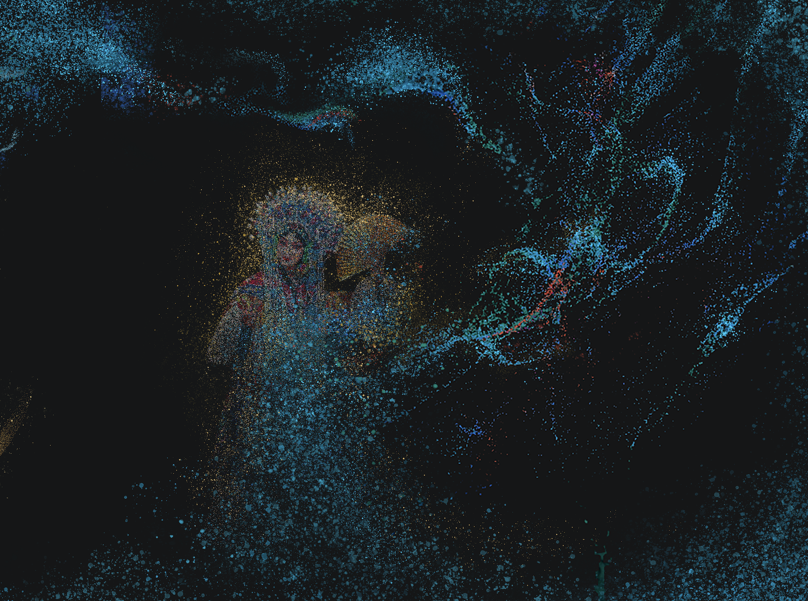

其他更多作品...
多个交互装置设计与多媒体沉浸式项目，探索技术与艺术的融合，创造创新性与实用性兼具的作品。

Role
交互设计师、新媒体艺术创作者
Timeline
2022-2024年
Tools
Unity3D, TouchDesigner, Arduino
项目背景
在过往的交互装置设计与多媒体沉浸式项目中，探索技术与艺术的融合，提升跨端系统架构能力与多方协同能力。
设计方案
以"技术可落地、设计有温度"的方式，创造兼具创新性与实用性的作品，持续探索AI能力与设计流程的耦合。